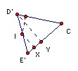
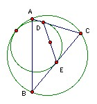
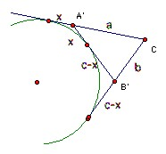

The triangle ABC has incenter I. A circle lies inside the circumcircle and touches it. It also touches the sides CA, BC at D, E respectively. Show that I is the midpoint of DE.
Solution

Let the line through I perpendicular to CI meet The sides CA, CB of the triangle at D', E'. Let the perpendiculars from I,D' meet CB at X,Y. Then by symmetry I is the midpoint of D'E'. Triangles IE'X, D'E'Y are similar, so D'Y = 2 IE' = 2r. Hence CD' = 2r/sin C = rs/(½s sin C) = (area ABC)/(½s sin C) = (½ab sin C)/(½s sin C) = ab/s. So it is sufficient to show that CD (and CE) = ab/s.

Invert wrt C so that a point a distance k from C goes to the point on the same line a distance ab/k from C. Then A goes to A' on the line CA with A'C = a, B goes to B' on the line CB with B'C = b, so ABC and B'A'C are congruent. The circumcircle goes to the line A'B'. Now the other circle touches the lines CA, CB and the circumcircle, so it goes to a circle which touches the lines CA', CB' and A'B'. But it lies on the opposite side of A'B' to C, so it becomes the excircle of A'B'C opposite C. Suppose D goes to D" under the inversion.

Let A'D" = x. Then chasing equal tangents, we get a + x = b + c - x, so x = s-a. Hence CD" = s. So CD = ab/s, as required. Similarly for CE.

© John Scholes
jscholes@kalva.demon.co.uk
8 Nov 2003
Last corrected/updated 8 Nov 03